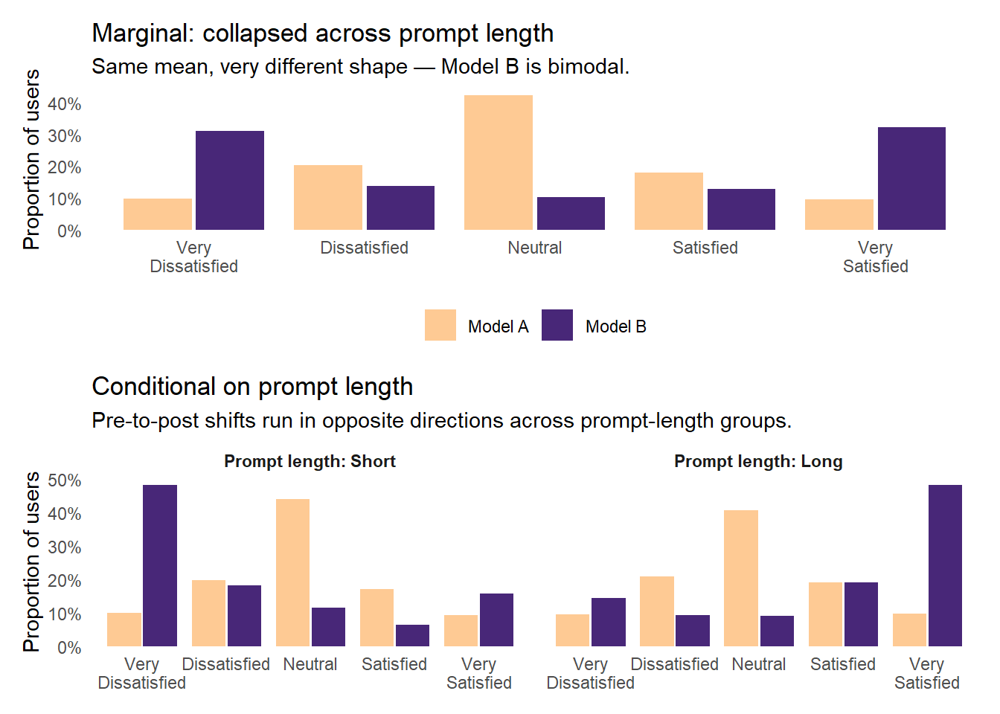
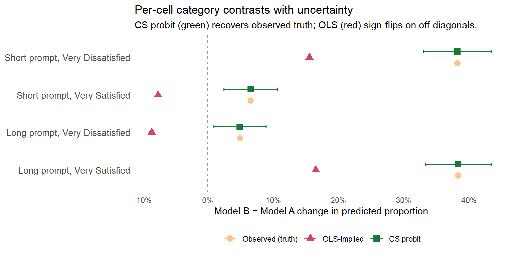

Ordinal Outcomes, Part 1: Stop Modeling a Meaningless Mean
general
rstats
ordinal
measurement
Why running linear regression on ordinal outcomes quietly throws away the thing you probably care about.
Authors
Jon Brauer
Jake Day
Published
May 13, 2026
Two different distributions. Same average satisfaction. Can your model tell them apart?
Preamble
We have been planning to write this series for a while. Ordinal (Likert-style, rating-scale) outcomes are pervasive in applied social research, and the default analytic approach (fit a linear regression, interpret the conditional mean, move on) routinely misses things that matter. We recently laid out the case in the Journal of Quantitative Criminology, using a reanalysis of racial differences in fear of police as our exemplar. Until recently, we had assumed that most quantitatively literate readers were already more or less aware of the issue, even if they did not always act on it.
Then a LinkedIn post I (Jon) wrote summarizing the argument unexpectedly landed, at least relative to the muted reception I had come to expect for academic posts on methodological topics. It accumulated over 50,000 impressions, a few hundred reactions, and dozens of comments from quantitatively literate researchers in both academic and applied settings, some of whom expressed genuine surprise at the problem. For example, a professor of psychology at a major research university stated the issue “needs a way bigger megaphone.” Like many others, they had never read Liddell and Kruschke’s 2018 canonical reference on this topic (Journal of Experimental Social Psychology), and their reaction certainly resonated with our feelings on the issue. Overall, the collective response signaled to us that the problem is less widely appreciated than we had imagined, and this may be particularly true for researchers who encounter rating-scale data routinely but are not deeply steeped in the methodological literature. So, here we are.
In this post, we argue that the problem is real (with a concrete story and a single figure), then introduce the cumulative probit model as a friendlier alternative and walk through what it gets you.1
Meet Yoda
To motivate what follows, let me start with a concrete example. Over the past several months, I (Jon) have been telling anyone who will listen to try Claude Code, the agentic coding tool from Anthropic that we now both rely upon heavily in our research workflows.2 Around my house, I have taken to calling it “Yoda,” partly because of the deferential way I have it check in before acting (“verify first, then solve I will?”), and partly because I think it is quietly training me to be a better data analyst in ways I am still figuring out.3
When I recommend Yoda to friends and colleagues, reactions are, shall we say, distributionally interesting. Some respond with something close to evangelism (“This has rewired how I work; I’ve been spending weekends achieving singularity with my AI alter ego”). A second group reacts with something between skepticism and hostility (“You want me to destroy the environment by talking to a stochastic parrot?”). A thinner middle group uses it for a while and reports, with a polite shrug, that it was fine but not life-changing; some of these are users who hit an early wall (a confusing permission prompt, a confidently wrong output, a frustrating sequence of exchanges) and bounced out before forming a firm opinion.
If you asked us to summarize the overall reaction in a single number, say, an average satisfaction score on a 1-to-5 ordinal response scale, then we could. The number would be close to 3 (Neutral), and it would also be almost entirely useless. In our view, it would actually be worse than useless, because it erases the thing we actually want to know. Reactions are bimodal, with most respondents landing at the extremes and very few feeling truly neutral. The ones in the middle are mostly people who have not used Yoda enough to have a formed opinion yet. If we shared that average with someone considering whether to adopt the tool, they would walk away with a wrong mental picture of the underlying reality.
Of course, this is not an AI-specific problem, nor is it a criminology-specific problem. In our experience, it is one of the most common and quietly costly problems in applied quantitative work. If you have ever run linear regression on a Likert-style or rating-scale outcome (a satisfaction score, an agreement scale, a severity rating, a fear-of-something measure), then you have probably thrown away information that you cared about, and you may have done so without noticing.
How I imagine my Claude-Yoda collaborator (with help from Gemini).
A simple two-condition comparison
Let us put the Yoda-satisfaction example into a form that will be familiar to most applied analysts.
Suppose we are comparing two versions of a coding assistant, call them Model A and Model B, and we want to know how users react to the difference. Whether we randomly assign users to one of the two versions, or have existing users try Model A and then switch them to Model B, each participant ends up giving a satisfaction rating on a five-point scale:
Value
Label
1
Very Dissatisfied
2
Dissatisfied
3
Neutral
4
Satisfied
5
Very Satisfied
With the data in hand, we do what most default analysis workflows make easiest. We fit a linear regression of satisfaction on treatment assignment, report the difference in means along with a standard error and p-value, and call it done. For some questions about some types of data, this workflow is perfectly adequate. The trouble, as we will argue, is that for Likert-type outcomes the linear regression we just ran is quietly committing us to several assumptions that we likely did not intend to make and may not agree with if they were stated out loud:
That the “distance” between Very Dissatisfied and Dissatisfied is the same as the distance between Neutral and Satisfied.4
That satisfaction is a continuous, unbounded quantity, such that a group’s “true” value could in principle be any real number, including 1.7, 4.2, or −10.
That the mean of responses is a meaningful summary of the underlying distribution.
Each of these assumptions is philosophically suspect, and each can bite you in practice as well. For example, the second one can lead to severe out-of-sample prediction failures. And the third, well, we named the post after this one for a reason. As we are about to see, there are common real-world distributions for which the mean is not merely imprecise; it is actively misleading.
Five distributions, the mean misses what matters
Here is the one figure we would put on the back of a t-shirt if we were so inclined. It is adapted from Figure 1 in our JQC paper, relabeled for the Yoda-satisfaction story. Take a look at it before we explain what you are looking at.
Five user-satisfaction distributions, each N=500. Light bars show the observed (simulated) response proportions. Dark line shows the normal curve implied by a linear model fit. Labels report the mean and SD from the linear model fit to each.
Look first at panels A, B, and C, which show three completely different distributions. Panel A is a symmetric, tent-shaped distribution in which most users land in Neutral with tapering tails on both sides; this is the only panel where a normal-curve story is even roughly plausible. Panel B is uniform, with every response category equally likely and no mode at all. Panel C is bimodal, with users clustering at Very Dissatisfied and Very Satisfied and a hollow middle. The bimodal C is, in broad strokes, the real-world Yoda distribution we described in the preamble (love, hate, and a thin strip of people in between).
Now look at the means. In each of panels A, B, and C, the mean is essentially 3.0 (with slight rounding). If we fed these three distributions into a linear model and asked which group had the highest satisfaction, the model would say they are all the same (i.e., it would fail to reject the hypothesis of no difference in means). A model calibrated to describing the mean cannot distinguish between a tent, a plateau, and a chasm.
A linear regression coefficient on treatment in a two-condition comparison is, fundamentally, a difference in means.5 So, if Model A produces distribution A and Model B produces distribution C, the linear model reports no detectable difference in means, and anyone relying on it would conclude that the two models are equivalent when they are obviously not.
That conclusion would be wrong in a way that matters. One of these two models is producing a deeply polarized user base (half enthusiasts, half detractors), while the other is producing a population of lukewarm users (who might seek better alternatives or keep using the tool without ever recommending it to anyone else). These are not the same product, yet the linear model sees no difference between them.
“These aren’t the estimands you’re looking for”
There is a useful piece of jargon for what is going on here, which we will introduce parenthetically and then largely drop.6 The thing we are trying to learn from the data is called an estimand. Different statistical models are tuned to estimate different estimands. A linear regression estimates conditional means. A cumulative probit regression (which we introduce below) estimates conditional probabilities of being at or below each response category on a latent continuous scale.
These are not the same target. For some data and some questions they give you similar answers. For other data and other questions they give you wildly different answers. The choice of model is therefore a choice of estimand, whether you realize you are making that choice or not. If you reach for linear regression because it is the default, and your outcome is ordinal, you are implicitly declaring that the mean of the response categories is the thing you care about.
These aren’t the estimands you’re looking for.
Move along.
Lacking Obi-Wan’s Jedi mind trick proficiency, we hope our blog persuades you to move along from mean-based estimands with ordinal outcomes.
The skewed panels
Panels D and E are there to show that, even when a linear model can distinguish two distributions by their means, the story those means tell is still impoverished.
Panel D (skewed toward Satisfied) has a mean of about 3.5, while Panel E (skewed toward Dissatisfied) has a mean of about 2.6. If we imagine these as two conditions in our comparison, then the linear model sees roughly a 1-unit mean difference; at least the model detects a difference.
Yet the modal responses tell a different story. In D, the most common response is Very Satisfied (30% of the sample), whereas in E, the most common response is Very Dissatisfied (also 30% of the sample). The linear model is summarizing a situation in which the modal user flips from one pole to the other as a mean shift from just above Neutral (D) to just below Neutral (E). Anyone making decisions based on this summary would almost certainly underestimate how consequential the shift is for the extremes of the response distribution, which often is the part of the distribution where the action of most interest resides (e.g., the users most likely to churn, to evangelize, or otherwise engage in behaviors with outsized downstream consequences).
The linear model is not wrong about direction here; rather, it is wrong about magnitude and about where in the distribution the action is located, which are often the things you care about most.
This isn’t just a simulation
You might object that these are toy data, and the bimodal case in particular is engineered to embarrass the linear model. Would a real applied analysis actually produce a difference this dramatic? Yes, and our JQC paper shows one case where it does.
In that paper, we reanalyzed survey data from Pickett, Graham, and Cullen (2022) — who deserve credit for making their data publicly available — on racial differences in fear of police. Respondents rated how afraid they were of various types of police mistreatment on a 5-point scale, with Very Afraid at one extreme, and we looked specifically at fear of being killed by police. What happens if we use these different models to answer a straightforward question that many people care about: what proportion of Black respondents report being Very Afraid of police?
A standard linear model’s answer: ~11%.
A cumulative probit model’s answer: ~32.8%.
The observed proportion in the data: 32.1%.
Same data, same predictor, yet one model is off by a factor of three while the other is off by seven-tenths of a percentage point.7
Importantly, the two models yield nearly identical estimates of the average effect on the latent scale. Remember, that’s what the linear model is calibrated for. So, if all you want is a standardized mean difference (e.g., a Cohen’s d), then linear regression on an ordinal outcome often approximates the ordinal model just fine. Yet, if you care about specific response categories, tail probabilities, or distributional shape - which we think that we almost always do (or should) in applied research - then the two models can tell substantively different stories about what is happening in your data.
We keep coming back to this point. Linear regression on ordinal outcomes is not always wrong, but when it is wrong, it tends to be wrong about the things you cared about in the first place. Moreover, when it is wrong, you cannot know from the linear model’s results itself. Rather, you have to run a different model that is a better fit for your data to check it. So why not start with that better model instead?
Meet the cumulative probit model
So let us introduce that better model. Below, we lay out the cumulative probit model as a friendlier alternative to linear regression for ordinal outcomes, give the intuition for why it fits ordinal data better than a linear model does, and walk through a worked example so you can see what the output looks like and how to translate it into something you could hand to a collaborator without apologizing.
One note on scope before diving in. Everything below uses frequentist models (specifically MASS::polr) for readability and speed. Bayesian versions are strictly better for most of what we do in research, and they are what we used in our JQC paper. If you want the Bayesian walkthrough, our online supplement is where to look. For teaching the intuition in a blog post, though, polr is plenty.
Describe yourself with one word…
Let’s try to build your intuitions about what cumulative probit regression is doing; once it clicks, it will feel like the natural fit for ordinal outcomes.
Imagine that underneath the five-category satisfaction scale you see in your data, there is a continuous variable you cannot directly observe. Call it latent satisfaction, \(Y^*\). Each user has some value of \(Y^*\), and we see only which category it falls into, as determined by threshold cutpoints on the latent scale.
For identification, the cumulative probit model fixes the shape of \(Y^*\) as standard normal in the reference condition, with predictors shifting its mean left or right.8 The thresholds then do the heavy lifting of matching whatever shape the observed response distribution happens to take (uniform, bimodal, skewed, or otherwise). The normality assumption is therefore not really about what the observed data will look like; rather, it is about how predictor effects translate from a shift in the latent into differences in category probabilities.
To make this concrete, consider two distributions like the ones in the cartoon at the top of this post - a bimodal (polarized) distribution and a symmetric (mean-heavy) one. Below, we show each as a bar chart of observed category proportions (top row) alongside the same standard-normal latent \(Y^*\) carved by two thresholds into the three regions that produce those observed proportions (bottom row). We have simplified to a 3-category Dissatisfied / Neutral / Satisfied scale so the two thresholds are easy to see; the 5-category case with four thresholds is the same idea with more moving parts.
Same standard-normal latent \(Y^*\), different threshold placement. In the bimodal case, thresholds sit close together, carving out a thin middle slice and fat tails. In the mean-heavy case, thresholds sit far apart, carving out a wide middle slice and thin tails.
The key thing to notice is that the latent \(Y^*\) is the same standard normal in both columns. What differs is where the two thresholds sit. In the bimodal column, the thresholds are close together near zero, so the middle slice is thin and the tails are fat. In the mean-heavy column, the thresholds are pushed out to roughly \(\pm 0.84\), so the middle slice gets fat and the tails shrink. Same latent, different thresholds, completely different observed distributional shapes.
Another way to see what is going on here is to count the pieces of information each model uses to describe a group’s response distribution. With \(K\) response categories, a cumulative probit model uses \(K-1\) thresholds to represent the shape of the observed distribution. For the 3-category example above, that is two thresholds. For a 5-category satisfaction scale, it is four. For a 7-category severity scale, six. Each additional ordered category hands the model another piece of information that it can use to fit whatever shape the data actually take.
A linear model, by contrast, always uses exactly one piece of information to describe a group’s response distribution - its mean (plus a scalar residual SD that describes spread but not shape). Whether you have 3, 5, 7, or 11 ordered response categories, OLS collapses the whole distribution to a single number per group, and the “treatment effect” is just a difference between two such numbers. All the extra shape information that additional response categories provide is thrown away.
Imagine we were forced to describe you and your group with just one word — that would be, well, mean. The CP model relaxes that restriction by giving us more information so we can form a more comprehensive description of your group’s distribution.
Now imagine we carve this latent continuous scale into five pieces with four thresholds, \(\tau_1 < \tau_2 < \tau_3 < \tau_4\). If a user’s latent satisfaction \(Y^*\) falls below \(\tau_1\), they select Very Dissatisfied. If it falls between \(\tau_1\) and \(\tau_2\), they select Dissatisfied. And so on:
That is basically the entire model in one picture - a continuous normal distribution sitting on an x-axis, with four vertical dashed lines chopping it into five areas. The areas are the response-category probabilities.
Predictors enter the model by shifting the latent distribution left or right. If being assigned to Model B (versus Model A) raises latent satisfaction by, say, 0.4 standard deviations, then the whole bell curve slides to the right by 0.4, and the areas under each section of the curve change accordingly. Some slices get fatter (the Very Satisfied slice, in this case) and some get thinner (the Very Dissatisfied slice).
This is the generative story that a linear model simply does not have. Linear regression imagines satisfaction itself is a continuous number and fits a line through the mean. Cumulative probit imagines satisfaction responses are the censored, categorized shadow of a continuous thing, and it fits both the thresholds and the treatment shift that together generated what you observed.
One note on units before we fit anything: a cumulative probit coefficient is on a latent-scale z-score-like unit, not on response-category scale points. A coefficient of 0.4 means “the latent distribution shifts by 0.4 standard deviations,” not “the average response rises by 0.4 scale points.” To get numbers on the response-category scale you want, convert coefficients to predicted category probabilities, which we walk through below.
NoteA brief link-function interlude — click to expand
If you have not worked with generalized linear models before, the phrase above (“latent-scale z-score-like unit”) deserves a little unpacking.
A link function is how a regression model connects a linear combination of predictors (stuff like \(\beta_0 + \beta_1 X\)) to a constrained output (like a probability, which must live between 0 and 1).
In linear regression, the “link” is the identity function; the thing you model is the thing you want. In logistic regression, the link is the logit, because probabilities cannot go below 0 or above 1 but a linear predictor can. In cumulative probit regression, the link is the inverse standard normal CDF (the probit), applied to the cumulative probability of being at or below each response category.
For a deeper treatment, Richard McElreath’s Statistical Rethinking Chapter 12 is an unusually approachable starting point, and Bürkner and Vuorre (2019) is a very good practical primer focused on ordinal models specifically.
A worked example
Let us walk through a simulated treatment-effect study designed to show where a mean-based workflow silently fails. The scenario is a simplified 5-point port of Supplementary Simulation 1 in our JQC online supplement, which treats a closely related polarization pattern rigorously on a 7-point fear-of-police outcome with a Bayesian cumulative probit model and a formal LOO comparison.
The scenario. A team has been using Model A as its standard AI coding assistant for a while, and general satisfaction is moderate: most users rate it Neutral, with tapering tails on either side. The team then rolls out Model B, a new version that is more literal in its interpretation of prompts and makes fewer inferential leaps. The same 1000 users who had been rating Model A now spend two weeks with Model B and rate their satisfaction again — a within-subjects, pre–post design.
Before the rollout, telemetry from the API logs already recorded each user’s typical prompt length, bucketed at the median into Short and Long prompts. The working hypothesis for Model B’s heterogeneous effect is that its more literal style rewards users whose prompts already include plenty of context (Long-prompt users, whose instructions spell out what they want) and penalizes users whose prompts rely on the model to fill in inferential gaps from sparse text (Short-prompt users). This is a plausible, observable correlate for the polarization — not the only possible one, but the one we actually have in the data.
Under the hood, we assume the following: Model B does not on average make users any more or less satisfied, but it polarizes them along prompt-length lines. About three-quarters of users react to the switch (shock_intensity = 0.75). Of those who react, the direction depends on prompt length — roughly 80% of Long-prompt users love the more literal style and move toward Very Satisfied; roughly 80% of Short-prompt users find it frustrating and move toward Very Dissatisfied. The magnitude of each user’s move depends on their baseline rating (users in the middle can jump to an extreme; users already at an extreme stay close to it). The net result: a post-treatment marginal distribution with the same overall mean as pre but a bimodal shape; and, once we condition on prompt length, a much more orderly story with Long-prompt users shifted up and Short-prompt users shifted down.
Show simulation code
set.seed(1138)n <-1000# Pre-treatment (Model A): moderate, tent-shaped baseline around Neutral,# identical for both prompt-length groups (no pre-treatment difference)probs_pre <-c(0.10, 0.20, 0.40, 0.20, 0.10)# Observable user-level trait: typical prompt length (bucketed at the median)prompt_length <-sample(c("Short", "Long"), n, replace =TRUE, prob =c(0.5, 0.5))pre <-tibble(id =seq_len(n),prompt_length = prompt_length,treatment ="Model A",satisfaction =sample(1:5, n, replace =TRUE, prob = probs_pre))# Post-treatment (Model B): shock mechanism, direction depends on prompt_length# - with probability 1 - shock_intensity, user does not change# - otherwise, prob of "love" direction depends on prompt length# (Long → 0.8, Short → 0.2); magnitude depends on baseline responseshock_intensity <-0.75post <- prepost$treatment <-"Model B"for (i inseq_len(n)) {if (runif(1) < shock_intensity) { prob_love <-if (post$prompt_length[i] =="Long") 0.8else0.2 curr <- post$satisfaction[i]if (runif(1) < prob_love) {# Loves the new style -> moves toward Very Satisfied post$satisfaction[i] <-if (curr <=2) {sample(c(4L, 5L), 1, prob =c(0.4, 0.6)) } elseif (curr ==3) {sample(c(4L, 5L), 1, prob =c(0.3, 0.7)) } else {5L } } else {# Finds it frustrating -> moves toward Very Dissatisfied post$satisfaction[i] <-if (curr >=4) {sample(c(1L, 2L), 1, prob =c(0.6, 0.4)) } elseif (curr ==3) {sample(c(1L, 2L), 1, prob =c(0.7, 0.3)) } else {1L } } }}sim <-bind_rows(pre, post) %>%mutate(treatment =factor(treatment, levels =c("Model A", "Model B")),prompt_length =factor(prompt_length, levels =c("Short", "Long")),satisfaction_ord =factor(satisfaction, levels =1:5, ordered =TRUE) )# Cell-level observed proportions (4 cells: treatment × prompt_length)obs_probs <- sim %>%count(treatment, prompt_length, satisfaction) %>%complete(treatment, prompt_length,satisfaction =1:5, fill =list(n =0)) %>%group_by(treatment, prompt_length) %>%mutate(p_obs = n /sum(n)) %>%ungroup() %>% dplyr::select(treatment, prompt_length, satisfaction, p_obs)# Marginal observed proportions (collapsed over prompt_length)obs_probs_marginal <- sim %>%count(treatment, satisfaction) %>%complete(treatment, satisfaction =1:5, fill =list(n =0)) %>%group_by(treatment) %>%mutate(p_obs = n /sum(n)) %>%ungroup() %>% dplyr::select(treatment, satisfaction, p_obs)
Descriptive look
Start with group-level descriptives. Collapsed across prompt length, the Model A mean is 2.97 and Model B mean is 3.02 — the marginal view shows nothing happening. Broken out by prompt length, the cell-level picture is very different.
Pre-treatment (Model A), users of both prompt-length types rate the assistant almost identically (cell means 2.96 for Short and 2.98 for Long). Post-treatment (Model B), the cell means diverge sharply: Long-prompt users average about 3.77 (a clear improvement), while Short-prompt users average about 2.23 (a clear decline). The marginal Model B mean of 3.02 is essentially unchanged from Model A, because the two cell-level shifts roughly cancel out in the average. A treatment-effect analysis that ignores prompt length will see nothing; one that conditions on it will see a clear story.
Show code
p_marginal <-ggplot(obs_probs_marginal,aes(x =factor(satisfaction), y = p_obs, fill = treatment)) +geom_col(position =position_dodge(width =0.85), width =0.8, alpha =0.9) +scale_fill_manual(values =c("Model A"="#FEC488", "Model B"="#341069")) +scale_x_discrete(labels =c("Very\nDissatisfied", "Dissatisfied","Neutral", "Satisfied", "Very\nSatisfied")) +scale_y_continuous(labels =percent_format(accuracy =1),expand =expansion(mult =c(0, 0.05))) +labs(x =NULL, y ="Proportion of users", fill =NULL,title ="Marginal: collapsed across prompt length",subtitle ="Same mean, very different shape — Model B is bimodal.") +theme_minimal(base_size =11) +theme(legend.position ="bottom",panel.grid =element_blank())p_conditional <-ggplot(obs_probs,aes(x =factor(satisfaction), y = p_obs, fill = treatment)) +geom_col(position =position_dodge(width =0.85), width =0.8, alpha =0.9) +facet_wrap(~ prompt_length,labeller =labeller(prompt_length =function(x) paste("Prompt length:", x))) +scale_fill_manual(values =c("Model A"="#FEC488", "Model B"="#341069")) +scale_x_discrete(labels =c("Very\nDissatisfied", "Dissatisfied","Neutral", "Satisfied", "Very\nSatisfied")) +scale_y_continuous(labels =percent_format(accuracy =1),expand =expansion(mult =c(0, 0.05))) +labs(x =NULL, y ="Proportion of users", fill =NULL,title ="Conditional on prompt length",subtitle ="Pre-to-post shifts run in opposite directions across prompt-length groups.") +theme_minimal(base_size =11) +theme(legend.position ="none",panel.grid =element_blank(),strip.text =element_text(face ="bold"))p_marginal / p_conditional +plot_layout(heights =c(1, 1.2))

Observed satisfaction distributions by treatment. Top panel: marginal (collapsed across prompt length), where Model B is bimodal and shares Model A’s mean. Bottom panel: conditional on prompt length, where the effect runs in opposite directions across prompt-length groups.
The marginal Model B distribution (top panel) is bimodal, with 31% at Very Dissatisfied and 32% at Very Satisfied and a hollow middle, even though its mean is essentially identical to Model A’s. Yet each conditional distribution (Short-only or Long-only, in the bottom panel) is approximately monotonic. The polarization is happening along the prompt-length dimension, not within either prompt-length group. A well-specified model should be able to use that information.
Linear regression
The default mean-based workflow now has an obvious model to reach for — a linear regression with the treatment × prompt-length interaction, so the per-cell effects can be recovered.
Show code
m_ols <-lm(satisfaction ~ treatment * prompt_length, data = sim)ols_tab <-coef(summary(m_ols))colnames(ols_tab) <-c("Estimate", "SE", "t", "p")kable(round(ols_tab, 3),caption ="Linear regression of satisfaction on treatment × prompt length")
Linear regression of satisfaction on treatment × prompt length
Estimate
SE
t
p
(Intercept)
2.955
0.059
50.361
0.000
treatmentModel B
-0.724
0.083
-8.724
0.000
prompt_lengthLong
0.029
0.082
0.357
0.721
treatmentModel B:prompt_lengthLong
1.509
0.116
12.996
0.000
Two coefficients carry the story. The main effect of treatment, -0.724 scale points (SE = 0.083, p = 0), is the Model-A-to-Model-B change for the reference group (Short-prompt users). The interaction term, 1.509 scale points (SE = 0.116, p = 0), is how much more Model B affects Long-prompt users compared with Short-prompt users.9 Those two coefficients, together with the intercepts, recover the per-cell mean pattern from the descriptives table: Short users drop, Long users rise.
Cumulative probit
Same model structure, but under a cumulative probit that respects the ordinal nature of the outcome.
Show code
m_ord <-polr(satisfaction_ord ~ treatment * prompt_length, data = sim,method ="probit", Hess =TRUE)# polr reports Value, Std. Error, t value (no p). Compute p from |t| as 2 * P(Z > |t|).ord_raw <-coef(summary(m_ord))ord_tab <-cbind(Estimate = ord_raw[, "Value"],SE = ord_raw[, "Std. Error"],t = ord_raw[, "t value"],p =2*pnorm(-abs(ord_raw[, "t value"])))kable(round(ord_tab, 3),caption ="Cumulative probit (proportional odds) of satisfaction on treatment × prompt length. Rows labeled `k|k+1` are the four latent-scale thresholds separating response categories; the last three rows are the regression coefficients.")
Cumulative probit (proportional odds) of satisfaction on treatment × prompt length. Rows labeled k|k+1 are the four latent-scale thresholds separating response categories; the last three rows are the regression coefficients.
Estimate
SE
t
p
treatmentModel B
-0.626
0.069
-9.027
0.000
prompt_lengthLong
0.021
0.066
0.326
0.745
treatmentModel B:prompt_lengthLong
1.276
0.097
13.162
0.000
1|2
-0.882
0.053
-16.651
0.000
2|3
-0.327
0.049
-6.638
0.000
3|4
0.407
0.050
8.206
0.000
4|5
0.913
0.053
17.187
0.000
Two things in this table are worth a look. The bottom four rows (1|2 through 4|5) are the thresholds — the latent-scale cutoffs where the response transitions from one Likert category to the next. This is the cumulative probit’s main structural advantage over OLS: instead of one intercept plus a residual SD, the model has four free threshold parameters per baseline cell, which together can represent any shape of baseline distribution the data happen to show (see the intuition section). The top three rows are the regression coefficients: treatment main effect (-0.626 latent SDs, p = 0) for the Short-prompt reference group, the prompt-length main effect for Model A, and the treatment × prompt-length interaction (1.276 latent SDs, p = 0). Both the OLS and the cumulative probit capture the interaction clearly now that we have conditioned on prompt length.
Predicted probabilities per cell
Each fitted model implies a predicted category probability for every (treatment × prompt length) cell. This is where we can see how well each model uses the covariate.
Show code
newdat <-expand_grid(treatment =factor(c("Model A", "Model B"), levels =c("Model A", "Model B")),prompt_length =factor(c("Short", "Long"), levels =c("Short", "Long")))# Cumulative probit (PO) predicted probabilitiespreds_ord <-predict(m_ord, newdata = newdat, type ="probs") %>%as_tibble() %>%mutate(treatment = newdat$treatment,prompt_length = newdat$prompt_length) %>%pivot_longer(-c(treatment, prompt_length),names_to ="satisfaction", values_to ="p_ord") %>%mutate(satisfaction =as.integer(satisfaction))# OLS-implied predictions: treat the fit as a continuous normal,# then bin probability mass at 0.5-unit edgesmu_hat <-predict(m_ols, newdata = newdat)sig_hat <-summary(m_ols)$sigmaols_bin_probs <-function(mu, sig) { edges <-c(-Inf, 1.5, 2.5, 3.5, 4.5, Inf)diff(pnorm(edges, mean = mu, sd = sig))}preds_ols <- newdat %>%mutate(row =row_number()) %>%group_by(row) %>%reframe(treatment = treatment,prompt_length = prompt_length,satisfaction =1:5,p_ols =ols_bin_probs(mu_hat[row], sig_hat)) %>% dplyr::select(-row)main_preds <- obs_probs %>%left_join(preds_ord, by =c("treatment", "prompt_length", "satisfaction")) %>%left_join(preds_ols, by =c("treatment", "prompt_length", "satisfaction")) %>%mutate(across(c(p_obs, p_ord, p_ols), ~coalesce(., 0)))
Observed proportions (orange bars) versus predicted probabilities from OLS and the proportional odds (PO) cumulative probit. Rows are prompt-length groups; columns are treatment conditions. OLS-implied predictions (red triangles) are smooth normal curves around each cell’s mean — directionally right now that the interaction is in the model, but they smooth over the discrete structure of a Likert response and miss the observed shape within each cell. The PO cumulative probit (purple circles) stays inside the categorical space and tracks the distributional shape of the observed bars within each cell, but with room for improvement.
Two patterns stand out. First, OLS-implied predictions (red triangles) are directionally correct within each cell now that the interaction is in the model — they track down in the Short/Model B cell and up in the Long/Model B cell — but the shape is always a smooth normal curve, which smooths over the discreteness and bounds of a Likert response and misses the observed within-cell detail (for instance, the observed spike at Very Satisfied for Long/Model B). Second, the cumulative probit (purple circles) stays inside the space of valid categorical distributions and tracks the distributional shape of observed bars a bit more closely, though with plenty of room for improvement.
Which numbers actually matter? Revisiting the estimand question
The OLS coefficient, the cumulative probit coefficient, and even the 2×2 plot above all summarize the whole distribution of satisfaction. For most applied decisions about a rollout, though, the relevant estimand is not a coefficient; it is a specific tail probability conditional on a cell. A team deciding whether Model B is a net gain, a net loss, or something more nuanced probably cares about questions like:
Among Short-prompt users — the ones whose workflow leaned on Model A’s inferential leaps — what fraction ended up “Very Dissatisfied”? These are the users most at risk of churning, filing support tickets, or complaining in public channels.
Among Long-prompt users, what fraction ended up “Very Satisfied”? These are the users most likely to evangelize internally, build on the new model, and invite new users in.
Both are tail probabilities — quantities the OLS coefficient table does not directly report. To extract them we use the same logic as our JQC reanalysis above, where the estimand was P(Very Afraid | Black). Here the analogs are P(Very Dissatisfied | Model B, Short) and P(Very Satisfied | Model B, Long).
Tail probabilities for the two decision-relevant cells.
Treatment
Prompt length
Category
Observed
OLS-implied
PO probit
Model A
Short
Very Dissatisfied
10%
13%
19%
Model B
Short
Very Dissatisfied
48%
29%
40%
Model A
Long
Very Satisfied
10%
12%
19%
Model B
Long
Very Satisfied
48%
29%
40%
Two things stand out. First, switching from Model A to Model B shifts the tail of each subgroup dramatically in opposite directions — the share of Short-prompt users landing at Very Dissatisfied roughly quintuples, and Long-prompt users at Very Satisfied do the same in the other direction. The overall-mean summary we opened with completely hid these shifts.
Second — and this is different from the earlier toy scenarios in this post, where OLS broke and the cumulative probit clearly did not — both models miss the extremes where the decision-relevant action is. OLS-implied numbers are compressed toward the middle at both ends, as expected from a normal-curve worldview: OLS over-predicts the Model A baseline tails (~13% vs. 10% observed) and badly under-predicts the Model B tails (~29% vs. 48% observed — nearly a 20-point miss at each decision-relevant cell). The cumulative probit does better overall — its shape predictions stay inside the categorical space, and its coefficient-level summary of the mean effect is essentially equivalent to OLS’s — but it still over-predicts the Model A baseline (~19% vs. 10%) and under-predicts the Model B tail (~40% vs. 48%), about 8 to 10 points off at the extremes in both directions.
The ordering “OLS < cumulative probit” from earlier still holds; the cumulative probit’s category predictions are a modest improvement on OLS’s across the board. But a modest improvement over a fundamentally wrong model is not the same as being right. For this scenario, at the tail estimands a product team would actually want to report, both fits are broken. Broken is broken.
The natural fix: drop the proportional odds assumption
The reason both models miss the extremes here is a constraint they share in different guises: within each (treatment × prompt length) cell, both are forced to summarize Model B’s effect with a single number — a mean shift for OLS, a latent-scale shift for the cumulative probit. Neither specification can put more probability mass at the tails than at the middle of a given cell’s distribution. In our data, that single-number constraint does not hold — the shock mechanism pushes users who were in the middle of the scale toward an extreme but barely moves users who were already at an extreme — so the models under-predict the extremes and over-predict the middle.
For the cumulative probit, this is what is known as the proportional odds (PO) assumption in action. From now on, we will refer to the standard cumulative probit model you just learned about as the “proportional odds (PO) probit” model.
NoteDiving deeper: The proportional odds assumption — click to expand
A standard cumulative probit model (such as the one MASS::polr fits) assumes that the treatment shift on the latent scale is the same at every threshold. Under this assumption, a predictor’s effect is to slide the whole latent distribution left or right by a single amount; the shape of that distribution does not change. This is the proportional odds (PO) assumption, named after its logit analog.
In real data, the PO assumption is often violated, sometimes mildly and sometimes dramatically. The polarization scenario in our worked example is an extreme violation at the marginal (no-covariate) level, and a milder violation within each cell once we have conditioned on prompt length. A different kind of violation might arise when a treatment pushes people out of Very Dissatisfied more efficiently than it pushes them into Very Satisfied, so the effect is larger at low thresholds than at high ones. When PO is badly violated, the cumulative probit’s single treatment coefficient is still a number the model produces, but it can mask — or in the polarization case, erase — category-specific effects that matter for the decision you are trying to make.
Your options when PO looks shaky:
Fit a non-proportional (category-specific) model with one coefficient per threshold. ordinal::clm(..., nominal = ~ treatment) is the fast frequentist path (what we use below); brms::brm(..., family = cumulative("probit")) with category-specific structure is the Bayesian path. Compare to the proportional version via LOO cross-validation (Bayesian) or information criteria (frequentist).
Fit a multinomial logit or probit model and treat each category’s effect separately. You throw away the ordinal structure, but you get fully flexible category-specific effects.
Test the assumption formally. Likelihood-ratio or score tests exist (brant::brant() in R), though a Bayesian LOO comparison is generally more informative.
The fix is to drop the PO constraint and let the treatment effect vary across thresholds by specifying a “category-specific” (CS) probit model instead. In R this is a one-liner with ordinal::clm()’s nominal argument:
Observed proportions (orange bars), OLS-implied predictions (red triangles), and category-specific (CS) cumulative probit predictions (green diamonds). The PO probit is dropped here to keep the plot readable. The category-specific probit sits essentially on top of every observed bar — it has a free parameter at each threshold for each cell, so it can match the cell distributions exactly.
The green diamonds sit essentially on top of the observed bars in every cell. That is the fix. As a quick-and-dirty numerical check, the average total-variation distance (TVD) from the observed distribution across the four cells is about 0.21 for the OLS-implied predictions, 0.17 for the PO probit, and 0 for the category-specific probit (the last is zero by construction; this specification has enough free parameters to fit each cell’s distribution perfectly).10
The applied deliverable: contrasts with uncertainty bounds
With the CS probit in hand, a product team can now extract the two decision-relevant tail-probability contrasts — Model B’s effect on Very Dissatisfied for Short-prompt users (the churn-risk shift), and Model B’s effect on Very Satisfied for Long-prompt users (the evangelism shift) — along with their off-diagonal counterparts. To make the comparison across models immediate, we pair the CS-probit contrasts (and their 95% CIs) with the observed cell-level changes and the changes OLS would imply. The marginaleffects package produces the CS-probit contrasts in one call:
Show code
library(marginaleffects)# CS probit contrasts, with 95% CIs, for categories 1 and 5 by prompt lengthcs_contr <-avg_comparisons( m_ord_cs,variables ="treatment",by ="prompt_length",type ="prob") %>%as_tibble() %>% dplyr::filter(group %in%c("1", "5")) %>%mutate(category =ifelse(group =="1","Very Dissatisfied","Very Satisfied")) %>% dplyr::select(prompt_length, category, estimate, conf.low, conf.high, p.value)# Observed and OLS-implied Model B − Model A changes for the same extreme categoriesobs_ols <- all_preds %>% dplyr::filter(satisfaction %in%c(1, 5)) %>%mutate(category =ifelse(satisfaction ==1,"Very Dissatisfied","Very Satisfied")) %>% dplyr::select(treatment, prompt_length, category, p_obs, p_ols) %>%pivot_wider(names_from = treatment,values_from =c(p_obs, p_ols)) %>%mutate(obs_delta =`p_obs_Model B`-`p_obs_Model A`,ols_delta =`p_ols_Model B`-`p_ols_Model A` ) %>% dplyr::select(prompt_length, category, obs_delta, ols_delta)obs_ols %>%left_join(cs_contr, by =c("prompt_length", "category")) %>%arrange(prompt_length, category) %>%mutate(obs_delta = scales::percent(obs_delta, accuracy =1),ols_delta = scales::percent(ols_delta, accuracy =1),cs_with_ci =sprintf("%s [%s, %s]", scales::percent(estimate, accuracy =1), scales::percent(conf.low, accuracy =1), scales::percent(conf.high, accuracy =1)),p.value = scales::pvalue(p.value, accuracy =0.001) ) %>% dplyr::select(prompt_length, category, obs_delta, ols_delta, cs_with_ci, p.value) %>%kable(col.names =c("Prompt length", "Category","Observed Δ","OLS-implied Δ","CS probit Δ [95% CI]","p"),caption ="Model B vs. Model A effect on extreme-category probabilities, by prompt length: observed cell-level change, OLS-implied change, and category-specific probit estimate with 95% CI.")
Model B vs. Model A effect on extreme-category probabilities, by prompt length: observed cell-level change, OLS-implied change, and category-specific probit estimate with 95% CI.
Prompt length
Category
Observed Δ
OLS-implied Δ
CS probit Δ [95% CI]
p
Short
Very Dissatisfied
38%
16%
38% [33%, 43%]
<0.001
Short
Very Satisfied
7%
-8%
7% [2%, 11%]
0.002
Long
Very Dissatisfied
5%
-9%
5% [1%, 9%]
0.016
Long
Very Satisfied
38%
17%
38% [33%, 43%]
<0.001
Three things to notice.
First, the observed Δ column is what actually happened in the data: roughly 38-percentage-point shifts at the two decision-relevant cells (Short users toward Very Dissatisfied, Long users toward Very Satisfied), and smaller positive shifts of 5 to 7 points at the two off-diagonal cells — the ~20% minority of users in each group who react against their group’s modal direction under our shock mechanism (some Short-prompt users end up loving Model B anyway; some Long-prompt users end up frustrated).
Second, the OLS-implied Δ column is where the linear model’s failure is most visible. At the two diagonal cells, OLS reports about 16 to 17 percentage points of shift — roughly half the real 38-point change. That is the tail compression we flagged in the previous table: a normal curve around the fitted cell mean cannot put enough mass at one extreme to match what the data are actually doing. At the two off-diagonal cells, OLS does something worse — it gets the sign wrong. It reports that Short-prompt users’ share of Very Satisfiedfalls by 8 points when the data show it rises by 7, and that Long-prompt users’ share of Very Dissatisfiedfalls by 9 points when the data show it rises by 5. OLS’s view of each cell is “the mean shifted, so both tails shift with the mean” — but in ordinal polarization, a minority of users moves in the opposite direction of the majority, and the symmetric-normal story cannot accommodate that.11
Third, the CS probit Δ [95% CI] column matches the observed Δ in point estimate by construction — a saturated fit recovers the observed cell proportions exactly — but now with confidence intervals for communicating uncertainty and p-values for testing. At both decision-relevant cells the 95% CIs comfortably exclude zero; at the off-diagonal cells the effects are small but still clearly distinguishable from zero.
This is the kind of evidence an applied team can hand to a non-technical collaborator: specific, interpretable, uncertainty-qualified, category-level contrasts whose point estimates are easily displayed in a simple plot and match the empirical cell shifts rather than being distorted — either by compression or by a sign flip — by a model’s shape assumptions.12 The same information as a point-interval figure makes the comparison across sources unmissable:
Show code
contrast_plot_dat <- obs_ols %>%left_join(cs_contr, by =c("prompt_length", "category")) %>%mutate(cell_label =factor(sprintf("%s prompt, %s", prompt_length, category),levels =c("Short prompt, Very Dissatisfied","Short prompt, Very Satisfied","Long prompt, Very Dissatisfied","Long prompt, Very Satisfied") ) )contrast_plot_long <- contrast_plot_dat %>%pivot_longer(c(obs_delta, ols_delta, estimate),names_to ="source", values_to ="delta") %>%mutate(source =recode(source,obs_delta ="Observed (truth)",ols_delta ="OLS-implied",estimate ="CS probit"),source =factor(source, levels =c("Observed (truth)", "OLS-implied", "CS probit")),ci_low =ifelse(source =="CS probit", conf.low, NA_real_),ci_high =ifelse(source =="CS probit", conf.high, NA_real_) )ggplot(contrast_plot_long,aes(x = delta, y = cell_label, color = source, shape = source)) +geom_vline(xintercept =0, linetype ="dashed", color ="#888888") +geom_errorbar(aes(xmin = ci_low, xmax = ci_high),width =0.25, linewidth =0.6, na.rm =TRUE,position =position_dodge(width =0.45),orientation ="y") +geom_point(size =3, position =position_dodge(width =0.45)) +scale_x_continuous(labels = scales::percent_format(accuracy =1)) +scale_color_manual(values =c("Observed (truth)"="#FEC488","OLS-implied"="#D3436E","CS probit"="#1B7837")) +scale_shape_manual(values =c("Observed (truth)"=16,"OLS-implied"=17,"CS probit"=15)) +scale_y_discrete(limits = rev) +labs(x ="Model B − Model A change in predicted proportion",y =NULL, color =NULL, shape =NULL,title ="Per-cell category contrasts with uncertainty",subtitle ="CS probit (green) recovers observed truth; OLS (red) sign-flips on off-diagonals.") +theme_minimal(base_size =11) +theme(legend.position ="bottom",panel.grid =element_blank(),axis.text.y =element_text(size =10))

Per-cell Model B − Model A change in predicted proportion at each decision-relevant and off-diagonal cell. Orange = observed truth; red = OLS-implied; green = CS probit point estimate with 95% CI. The vertical dashed line marks the null (no change). CS probit estimates recover the observed shifts at all four cells; OLS compresses the diagonal shifts and gets the sign wrong at the two off-diagonal cells.
The plot tells the same three-part story as the table: CS probit points sit on top of the observed-truth points (by construction, with 95% CIs that comfortably exclude the null at all four cells); OLS-implied triangles compress toward the null at the two large-shift diagonal cells; and at the two off-diagonal cells OLS-implied triangles cross the vertical zero line in the wrong direction, the sign-flip pattern made visual.
Model fit and out-of-sample prediction
While the contrast table and resulting plots are the main deliverable, what is still missing is a summary of how well each model fits the data and a sense of how well it would generalize to new observations. Both are standard model-comparison hygiene; both end up reinforcing the contrast-table story. We make three passes: a marginal AIC observation, an in-sample fit summary for the full models, and a held-out predictive check. If you don’t care about these details, feel free to skip ahead to the takeaway section.
Show helper functions (categorical log-likelihood for OLS; RPS)
# Log-likelihood of an OLS fit, scored on the CATEGORICAL outcome.# Integrates the fitted normal over half-integer bins to get a K-category# predicted distribution per observation, then sums log-probabilities of# the observed responses. This puts OLS on the same likelihood scale as# the cumulative-probit fits, so AIC / BIC comparisons are meaningful.ols_cat_loglik <-function(model, data, y_col ="satisfaction", K =5) { mu <-predict(model, newdata = data) sig <-summary(model)$sigma edges <-c(-Inf, seq(1.5, K -0.5, by =1), Inf) y <- data[[y_col]] p_lower <-pnorm(edges[y], mean = mu, sd = sig) p_upper <-pnorm(edges[y +1], mean = mu, sd = sig)sum(log(pmax(p_upper - p_lower, 1e-12)))}# Ranked Probability Score per observation. Returns a vector of length N.# Lower is better. Proper scoring rule, ordinal-aware (uses cumulative CDFs).rps_score <-function(p_mat, y_vec, K) { cdf_pred <-t(apply(p_mat, 1, cumsum))[, 1:(K -1), drop =FALSE] cdf_obs <-outer(y_vec, seq_len(K -1), function(y, j) as.numeric(y <= j))rowSums((cdf_pred - cdf_obs)^2) / (K -1)}
A marginal AIC observation. Recall the opening example: an analyst who fits lm(satisfaction ~ treatment) on these data — ignoring prompt length — concludes the rollout was a wash, because the two marginal means are essentially identical. We showed how adding prompt length to the model detects the heterogeneous treatment effect and switching to the cumulative probit model family improves estimation. That argument still holds, but a brief return to the marginal comparison is worthwhile to formally show that, even on the no-covariate A/B test where both models report null average treatment p-values, the PO probit fits the categorical distribution of responses better than OLS does on a common categorical-likelihood scale.13
Show code
m_ols_marg <-lm(satisfaction ~ treatment, data = sim)m_ord_marg <-polr(satisfaction_ord ~ treatment, data = sim,method ="probit", Hess =TRUE)# Treatment effect coefficients (each on its native scale) + p-valuesols_summary_marg <-summary(m_ols_marg)$coefficientsols_b_marg <- ols_summary_marg["treatmentModel B", "Estimate"]ols_p_marg <- ols_summary_marg["treatmentModel B", "Pr(>|t|)"]ord_summary_marg <-summary(m_ord_marg)$coefficientsord_b_marg <- ord_summary_marg["treatmentModel B", "Value"]ord_t_marg <- ord_summary_marg["treatmentModel B", "t value"]ord_p_marg <-2*pnorm(-abs(ord_t_marg))n_obs <-nrow(sim)ll_ols_m <-ols_cat_loglik(m_ols_marg, sim)df_ols_m <-length(coef(m_ols_marg)) +1L # +1 for residual SDll_ord_m <-as.numeric(logLik(m_ord_marg))df_ord_m <-attr(logLik(m_ord_marg), "df")marg_fit <-tibble(Model =c("Linear (OLS)", "PO cumulative probit"),`Treatment β`=c(sprintf("%.3f", ols_b_marg), sprintf("%.3f", ord_b_marg)),`p`=c(scales::pvalue(ols_p_marg, accuracy =0.001), scales::pvalue(ord_p_marg, accuracy =0.001)),logLik =c(ll_ols_m, ll_ord_m),df =c(df_ols_m, df_ord_m),AIC =c(-2* ll_ols_m +2* df_ols_m,-2* ll_ord_m +2* df_ord_m),BIC =c(-2* ll_ols_m + df_ols_m *log(n_obs),-2* ll_ord_m + df_ord_m *log(n_obs)))kable(marg_fit, digits =1,caption ="Marginal-model fit (no covariate). OLS β is in scale-point units and PO probit β is in latent-SD units; log-likelihoods are on the common categorical scale (see footnote). Both models report a null treatment p-value; the PO probit's AIC is substantially lower.")
Marginal-model fit (no covariate). OLS β is in scale-point units and PO probit β is in latent-SD units; log-likelihoods are on the common categorical scale (see footnote). Both models report a null treatment p-value; the PO probit’s AIC is substantially lower.
Model
Treatment β
p
logLik
df
AIC
BIC
Linear (OLS)
0.047
0.455
-3266.7
3
6539.3
6556.1
PO cumulative probit
0.026
0.592
-3184.4
5
6378.8
6406.8
Two things to read off the table. First, the treatment β and p columns show that the two models give essentially the same inferential answer at the marginal level: a small treatment coefficient (each in its own units) and a p-value well above any conventional threshold. As applied inference about the conditional mean, the PO probit is non-inferior to OLS here — it does not somehow recover a treatment effect OLS missed. Recovering that effect requires the covariate, as the rest of this section has shown.
Second — and this is the actual point — the PO probit’s AIC sits 160.5 points below OLS’s. AIC is not rescuing a missed treatment effect; both models report the same null inference. What AIC is registering is that the PO probit describes the categorical distribution of responses much better than OLS does, regardless of what either model says about the conditional mean. That observation is what makes the PO cumulative probit a safer default for ordinal data. PO probit matches OLS on the simple inference, it formally fits the categorical structure better, and (as the rest of this section shows) it ports cleanly into predicted category probabilities and tail-probability contrasts in a way OLS does not.
Full-model fit (treatment × prompt length). With the interaction in place, all three models recover something useful about the cell-level pattern. The AIC and BIC ordering on in-sample fit:
Full-model fit (treatment × prompt length). Lower AIC and BIC indicate better fit; OLS log-likelihood again on the categorical scale.
Model
logLik
df
AIC
BIC
Linear (OLS)
-3102.2
5
6214.4
6242.4
PO cumulative probit
-3017.4
7
6048.9
6088.1
Category-specific probit
-2828.5
16
5688.9
5778.5
OLS is consistently worst, the PO probit a sizable step better, and the category-specific probit better still. BIC’s heavier parameter penalty narrows the PO-versus-CS gap somewhat — CS adds parameters that PO does not need under proportional odds — but both criteria agree on the ranking. The CS probit’s fit advantage here reflects a real distributional improvement in this scenario. Recall, we designed the shock mechanism to violate proportional odds, so the extra per-threshold CS parameters are paying for themselves. Under proportional odds, the PO probit would (correctly) win out.
Out-of-sample check on a held-out 20%. AIC is an estimate of expected out-of-sample log-likelihood under regularity conditions; a held-out scoring exercise is the more direct version. We split the data 80/20, refit all three models on the training set, predict category probabilities for each test observation, and score the predictions with the Ranked Probability Score (RPS) — a proper scoring rule for ordinal outcomes that (unlike the multi-category Brier score) uses the order structure of the categories, so a prediction that misses by four categories scores worse than one that misses by one.14
Show code
set.seed(42)train_idx <-sample(seq_len(nrow(sim)), size =floor(0.8*nrow(sim)))train_dat <- sim[train_idx, ]test_dat <- sim[-train_idx, ]# Refit each model on the 80% training setm_ols_tr <-lm(satisfaction ~ treatment * prompt_length, data = train_dat)m_ord_tr <-polr(satisfaction_ord ~ treatment * prompt_length,data = train_dat, method ="probit", Hess =TRUE)m_ord_cs_tr <-clm(satisfaction_ord ~1,nominal =~ treatment * prompt_length,data = train_dat, link ="probit")# Predicted category probabilities on the held-out 20%K <-5mu_test <-predict(m_ols_tr, newdata = test_dat)sig_test <-summary(m_ols_tr)$sigmaedges <-c(-Inf, 1.5, 2.5, 3.5, 4.5, Inf)p_ols_test <-t(sapply(mu_test, function(mu)diff(pnorm(edges, mean = mu, sd = sig_test))))p_ord_test <-predict(m_ord_tr, newdata = test_dat, type ="probs")# clm: predict.clm with type="prob" returns scalars indexed by the response# encoded in newdata. To get an N × K matrix of category probabilities, we# predict per cell × per category, pivot wide, then join back to test_dat.cell_grid <-expand_grid(treatment =factor(c("Model A", "Model B"), levels =c("Model A", "Model B")),prompt_length =factor(c("Short", "Long"), levels =c("Short", "Long")),satisfaction_ord =factor(1:5, levels =1:5, ordered =TRUE))cell_grid$p_cs <-predict(m_ord_cs_tr, newdata = cell_grid, type ="prob")$fitcell_probs <- cell_grid %>%mutate(satisfaction =as.integer(as.character(satisfaction_ord))) %>% dplyr::select(treatment, prompt_length, satisfaction, p_cs) %>%pivot_wider(names_from = satisfaction, values_from = p_cs,names_prefix ="cat")p_cs_test <- test_dat %>% dplyr::select(treatment, prompt_length) %>%left_join(cell_probs, by =c("treatment", "prompt_length")) %>% dplyr::select(dplyr::starts_with("cat")) %>%as.matrix()y_test <- test_dat$satisfactionrps_per_obs <-tibble(treatment = test_dat$treatment,prompt_length = test_dat$prompt_length,rps_ols =rps_score(p_ols_test, y_test, K),rps_ord =rps_score(p_ord_test, y_test, K),rps_cs =rps_score(p_cs_test, y_test, K))cell_rps <- rps_per_obs %>%group_by(treatment, prompt_length) %>%summarise(OLS =mean(rps_ols),`PO probit`=mean(rps_ord),`CS probit`=mean(rps_cs),.groups ="drop") %>%mutate(treatment =as.character(treatment),prompt_length =as.character(prompt_length))overall_rps <-tibble(treatment ="Overall",prompt_length ="—",OLS =mean(rps_per_obs$rps_ols),`PO probit`=mean(rps_per_obs$rps_ord),`CS probit`=mean(rps_per_obs$rps_cs))bind_rows(cell_rps, overall_rps) %>%kable(digits =3,col.names =c("Treatment", "Prompt length","OLS", "PO probit", "CS probit"),caption ="Mean Ranked Probability Score (RPS) on the held-out 20% test set, by cell and overall. Lower is better.")
Mean Ranked Probability Score (RPS) on the held-out 20% test set, by cell and overall. Lower is better.
Treatment
Prompt length
OLS
PO probit
CS probit
Model A
Short
0.172
0.173
0.176
Model A
Long
0.146
0.150
0.144
Model B
Short
0.210
0.196
0.188
Model B
Long
0.229
0.221
0.213
Overall
—
0.191
0.187
0.181
Across the test set as a whole, the category-specific probit scores best, the PO probit next, and OLS worst — and the overall ranking matches the in-sample AIC ranking. Broken out by cell, the story is a little more nuanced. On the Model A baseline cells, where the distribution is close to a normal-curve story, OLS is competitive with (and in one cell slightly better than) the cumulative probits. The clear cumulative-probit advantage shows up at the two decision-relevant Model B cells (Short → Very Dissatisfied and Long → Very Satisfied), where the polarization mechanism puts most of the action and OLS’s normal-curve worldview cannot accommodate the bimodal redistribution. This is the same pattern as the contrast table — OLS is approximately right where the data are nearly normal, wrong by the most where they are not — and it matters because the cells where OLS fails are the cells an analyst most needs the model to get right. The fact that the overall ranking holds on observations the model never saw means that the cumulative probit is both describing the past better at the cells that matter and predicting the next cohort better at those same cells.
Two notes on what this result does and does not say, before we move on. First, at the Model A baseline cells, OLS’s competitiveness is a small-N bias-variance phenomenon that converges as expected with sample size. Second, the cell-level pattern, whatever its mechanics, does not rehabilitate the mean as a meaningful summary of ordinal data, because two independent failures of OLS-on-ordinal (one measurement-theoretic, one inferential) are still operating regardless of the predictive horse race. The expansion below unpacks both notes.
NoteTwo notes on the cell-level RPS pattern — click to expand
The mechanics of the cell-level pattern. The pattern at the Model A baseline cells reflects a classic small-N bias-variance trade-off. With around 200 training observations per cell, the saturated CS probit’s per-cell thresholds are estimated with enough noise that OLS’s parsimonious normal — pooling its residual SD across all cells — can come in as the lower-variance choice even when it is the higher-bias one. Re-running the held-out comparison at 5×, 10×, and 50× the present sample size confirms that the CS probit’s bias advantage grows with N as expected, but the convergence is asymmetric. At the Model B cells, where OLS’s normal assumption is badly mismatched to the data, CS dominates the held-out RPS at every sample size we tried, including N = 1,000. At the near-normal Model A baseline cells, where OLS’s specification error is small, CS reaches parity with OLS by 5× and only pulls ahead at 50×. The mechanics-level story is the same one (CS is correctly specified and asymptotically dominates; OLS carries a non-vanishing specification error), but the speed of CS’s dominance depends on how badly OLS’s normal assumption is mismatched to the per-cell truth (i.e., fast where it matters, slow where it doesn’t).
Why the mechanics do not rehabilitate the mean. That mechanics-level explanation does not rehabilitate the conditional mean as a meaningful summary of ordinal data, because two distinct failures of OLS-on-ordinal are operating here and they are independent.
The first failure is measurement-theoretic. Both OLS and the cumulative probit presuppose some kind of underlying continuum, but the assumptions differ in strength and in what each model then reports. OLS commits to the integer category labels as a real arithmetic scale (equal spacing between Very Dissatisfied and Dissatisfied, between Satisfied and Very Satisfied, both averageable) — a metric the labels themselves cannot supply and that real ordinal data routinely refute. The cumulative probit assumes only that some continuous latent underlies the categories and lets the data determine threshold spacing on it, which is closer to the minimum structure any probability model for ordinal data has to take on. And the deliverables sit on different scales. OLS reports the mean of category labels, a quantity that has no real-world referent independent of the equal-spacing assumption, while the cumulative probit reports category probabilities, which are quantities (proportions of users in each category) that map well onto observed ordinal data and that a non-technical reader can interpret directly.
The second failure is inferential. As the contrast table earlier in this section showed, OLS’s effect on the Model B off-diagonal cells came out sign-flipped relative to the data, a wrong-direction error rather than a magnitude-attenuation one, even on the cells where its predictive distribution was approximately right. Predictive adequacy at one layer of the model does not protect against interpretive failure at another, and as Frank Harrell has long argued, the metric problem sits upstream of the statistical one. That is, a model can predict the next cohort’s category proportions tolerably and still report a treatment contrast that points the wrong direction.
Want more? For a visceral, interactive demonstration of why OLS extrapolates badly outside the observed range — predicted mean drifting past the upper category boundary, predicted mass piling up on response values that cannot exist — see Tour 5 in Part 2.
Takeaway from the worked example
Three main lessons.
First, the marginal comparison of Model A vs. Model B (mean, SD, SE) shows nothing. The means are identical. An analyst who stops at a basic A/B treatment effect test concludes the rollout was a wash. That conclusion is wrong, and no amount of refining the Model A vs. Model B comparison on its own will fix it.
Second, conditioning on a plausible observable covariate — here, prompt length — changes everything. Once we add the interaction, both OLS and the cumulative probit recover a large, significant treatment-by-covariate effect. On how well the models represent the shape of the observed data, the cumulative probit still beats OLS (its thresholds can take any distributional shape, whereas OLS’s implied normal curve cannot), but the difference is now small compared to the difference between “with covariate” and “without.” Measuring the covariate matters more than the OLS-vs-probit choice. BUT…
Third, the natural extension from the PO probit to the category-specific cumulative probit costs almost nothing in code — one additional argument (nominal = ~ treatment * prompt_length) in a clm() call instead of a polr() call — and the payoff is substantially larger than the PO-vs-OLS gap we just minimized. The CS probit’s predicted cell probabilities match the observed cells exactly, and the per-cell treatment contrasts from marginaleffects::avg_comparisons recover the empirical Δs with 95% CIs that OLS does not produce in its native output. That contrast table and plot likely contain the information we really want (i.e., our actual estimand) and are accessible deliverables that an analyst can give to non-technical collaborators. The PO-vs-OLS choice, once the interaction is in the model, might be a wash on mean differences or contrast magnitudes in this particular case, but it won’t always be — and the PO-vs-CS choice (and shift in estimands) is not, and the upgrade is about ten characters of R code. The same logic applies to academic theoretical claims that hinge on category-level patterns, such as claims about polarization, ceiling effects, or category-level redistributions that a difference-in-means cannot speak to. And if you don’t have a heterogeneity-driving covariate to model? Well, the CS probit without any covariate still recovers the marginal Model A and Model B category proportions — a residual safety net for the distributional information OLS’s marginal coefficient cannot reliably represent.
NoteWhat “default to cumulative probit” actually buys — click to expand
By this point, it’s worth a quick check-in to make sure our worked example does not oversell on quick reading. In well-behaved cases (symmetric-ish baselines, a moderate latent shift, no PO violation, no boundary or scale pathology), the bare PO cumulative probit and OLS will frequently produce numerically similar contrasts. That is a feature, not a flaw. OLS is approximately right when its assumptions hold, and the PO probit reduces to almost the same answer because both are single-shift models. The argument for defaulting to the cumulative probit family is therefore not that it dominates OLS at every numerical comparison; rather, it is that the cumulative probit (i) better fits the per-cell category proportions correctly even when contrasts happen to agree, (ii) gives you category-level estimands and predicted probabilities with proper CIs as the natural output rather than as a crude post-processing step, (iii) extrapolates safely outside the observed range because its probabilistic predictions live in [0, 1] by construction, and (iv) when the assumptions you are tacitly making in OLS routinely do break (e.g., under PO violations, scale shifts, polarization, boundary effects), the category-specific extension (ordinal::clm with nominal = ~ treatment) is one toggle away. Given their relative advantages, there’s even a strong case for making ordinal regression models the default for continuous outcomes too!
Did our Jedi blog trick work? Are you ready to move along from mean-based estimands?
Move along, meaningless mean. Move along.
The message we keep coming back to is that the mean of an ordinal distribution is fundamentally meaningless, since it rests on an equal-spacing assumption that the integer category labels cannot defend, and many substantively important effects live in the distribution’s category proportions rather than in any single summary of its center.15 Committing to summarizing ordinal outcomes by their means commits you to throwing those category-level effects away — and those are the things that you probably (should) care about in the first place.
NoteGoing further: When OLS can miss (or misread) an effect even worse than above — click to expand
The worked example above illustrates just a few ways linear regression on an ordinal outcome can silently fail despite starting with symmetric-ish baseline data, a situation that many analysts assume it should work well enough. There are many other ways it can fail.
For example, Liddell and Kruschke (2018) document a distinct but related failure they call the missed-effect case. In their Figure 3, two groups have genuinely different latent means — group 1 at 3.0 on a 7-point latent scale, group 2 at 2.5 — and also different latent variances (group 1 with SD 1.5, group 2 with SD 3.0). The latent truth is that group 1 sits higher than group 2 (Cohen’s d ≈ 0.21). Yet the observed ordinal means come out essentially identical, and an OLS t-test returns d = 0.02, p = 0.85 — a null finding. Group 2’s larger dispersion pushes substantial mass into both the Very Dissatisfied floor and the Very Satisfied ceiling; the ceiling contribution inflates its observed mean enough to cancel group 1’s genuine latent advantage. Liddell and Kruschke note that with a larger SD contrast the observed ordinal means can in principle flip — producing an inference that reverses the direction of the latent effect rather than merely erasing it.
The same Liddell–Kruschke analysis also applies to plain MASS::polr, which assumes a single latent variance shared across groups. When that assumption breaks — and it does whenever one condition’s responses are more dispersed or more polarized than the other’s — the probit coefficient can be compressed toward zero just as OLS’s is. Recovering the truth in those cases requires either a heteroscedastic ordinal model (e.g., ordinal::clm with a scale = term, or a Bayesian cumulative model with group-varying discrimination) or a category-specific specification, depending on where the assumption violation is coming from.
Our JQC supplement collects two further illustrations worth knowing. Supplementary Simulation S1a is the 7-category Bayesian version of the polarization pattern in our worked example, fit across two ideology groups (conservatives and liberals) who polarize in opposite directions in response to a publicized police incident, with a formal LOO comparison substantially favoring the cumulative probit over OLS. Supplementary Simulation S1b makes a different point. It shows how two subpopulations sharing an identical zero-inflated baseline distribution can produce nearly identical conditional means under qualitatively different mechanisms (severity escalation among existing offenders vs. prevalence initiation among abstainers), so a linear group × time interaction comes out near zero while the cumulative probit captures the substantively meaningful category-level redistributions.
The point for this sidebar is that the OLS-versus-probit divergence on ordinal outcomes can be worse than magnitude attenuation. It can be a missed effect, a compressed effect, or — under a combination of floor/ceiling and dispersion contrasts — a full sign flip.
NoteGoing Bayesian: LOO, posteriors, and other reasons to make the switch — click to expand
The frequentist case for CP-as-default above is sufficient on its own. But once you’re committed to cumulative probit as your modeling family, the case for going Bayesian is straightforward enough to mention here. We’ve already mentioned Bayesian LOO, which is a powerhouse estimate of out-of-sample predictive accuracy, not just in-sample fit. For analysts whose decisions ride on predicting category proportions in the next cohort of users (or the next survey wave, or the next policy roll-out), that is the comparison that actually matters.
Our JQC supplement runs a formal LOO comparison on a 7-category fear-of-police version of our worked example (with ideology in the role that prompt length plays here) and finds it substantially favoring the cumulative probit over OLS, including under PO violations. And that’s before mentioning the further gains the Bayesian path brings, like posteriors for proper uncertainty quantification, regularizing priors that further improve out-of-sample predictive accuracy via shrinkage, and fewer convergence failures for complex models.
What you should be able to do now
If this post did its job, you should be comfortable with:
The generative story of a cumulative probit model as a hidden continuous latent scale, chopped by thresholds into observed response categories, shifted by predictors.
Reading a cumulative probit coefficient as “treatment shifts the latent scale by β standard deviations,” not as a scale-point change in the response.
Converting that coefficient into predicted probabilities for each response category, which is usually the quantity you actually want to report.
Recognizing when the linear model’s implied distribution is systematically compressing the tails you care about.
Knowing that the proportional odds assumption exists, can be tested, and has a straightforward workaround in the category-specific cumulative probit (ordinal::clm with nominal = ~ treatment), which drops the assumption and fits a saturated model on the cell distributions.
Comparing fits across models with AIC / BIC on a shared categorical likelihood scale, and validating the ranking out-of-sample with a held-out predictive check scored by a proper, ordinal-aware rule such as the Ranked Probability Score.
Specifically, if you have a simple two-condition comparison with a Likert-style outcome sitting in front of you right now, then you could fit MASS::polr(y_ord ~ treatment, data = dat, method = "probit"), call predict(..., type = "probs"), and report the difference in predicted proportion in each category between the two conditions. For most applied decisions, that is a substantially better deliverable than a single OLS coefficient, and it takes about the same number of keystrokes.
Ready for Part 2?
Part 2 ships an interactive Shiny app where you can dial up different ordinal-comparison scenarios — varying the baseline distribution, the effect size, the latent-variance contrast across conditions, whether a heterogeneity-driving covariate is in play, and how far past the observed effect you want to extrapolate — and watch OLS, the proportional-odds cumulative probit (PO CP), and the category-specific cumulative probit (CS probit) saber duel in real time. Five guided tours load with one click, each illustrating a distinct way OLS can go wrong on an ordinal outcome (a clean case as a baseline, a subgroup-polarization case that mirrors this post’s worked example, a tail-action case, a variance-only-shift case requiring a heteroscedastic extension, and a bimodal-baseline counterfactual case where OLS already places a substantial share of its predicted mass on response values that cannot exist — and that share grows under extrapolation as OLS’s predicted mean slides past the response-scale ceiling). Bonus scenarios cover an asymmetric (PO-violating) demo, an unobservable-mixture-polarization demo for cases where the heterogeneity-driving covariate is not in your data, a rare-event zero-inflated case, and a few “compound failure” combinations.
For now, if you have been reaching for a linear model when your outcome is ordinal (or even continuous), then consider spending ten minutes plotting the raw response distribution (and conditional distributions) before you reach for a model. If it looks like Panel A and you really only care about the conditional mean, then carry on with your regularly scheduled programming. Otherwise, consider fitting an ordinal regression (e.g., MASS::polr()) alongside whatever you were going to run and comparing the category predictions, as we did in the worked example.
Yoda, we suspect, would approve.
The fear of losing the mean is a path to the dark side.
This is the first of a two-post series on cumulative probit regression for ordinal outcomes. Part 2 ships an interactive Shiny app where you can dial up different ordinal-comparison scenarios — varying the baseline distribution, the effect size, whether the latent variance shifts across conditions, whether a heterogeneity-driving covariate is in play, and how far past the observed treatment effect you want to extrapolate — and watch OLS, the proportional-odds cumulative probit (PO CP), and the category-specific cumulative probit (CS probit) argue. Five guided tours each illustrate a distinct mode by which OLS goes wrong, with the worked example below as the conceptual through-line. The current post stands on its own; Part 2 is for readers who want to break things themselves.↩︎
I act like a brand ambassador but, unfortunately, I am not paid like one. Neither Jake nor I has received any sponsorship from Anthropic, though I (Jon) did receive a two-month free trial subscription to Claude Max for participating in this MIT study on AI use in the social sciences.↩︎
I realize naming an LLM after a fictional Jedi master is a little on the nose for someone who has used Star Wars jokes in at least three previous posts. I accept the critique. In my defense, I have a deep love for the franchise that predates the prequels, and the prequel apologists among us deserve a little warmth in this world. Jake disagrees. He maintains the prequels are perfectly fine films for the children they were made for; the scene at the end of Episode III, where Vader puts his arms out and yells “Nooo,” defies cinematic reason all the same.↩︎
There are philosophical and psychometric traditions that defend this assumption under specific conditions (e.g., summed scales with many items). We will not relitigate that debate here, though we encourage readers to dig into that canonical piece by Liddell & Kruschke that we mentioned earlier for a cogent illustration of how problems persist with summed scales comprised of ordinal items. For single-item ordinal outcomes (which is what almost every individual Likert question is, even when they are later averaged into a scale), the assumption is extremely hard to defend and easy to violate in ways that matter.↩︎
Specifically, the OLS coefficient is the conditional mean difference: with a binary treatment, β̂ = mean(Y | T=1) − mean(Y | T=0). Everything that is wrong with the mean as a summary of an ordinal outcome is therefore wrong with the OLS treatment coefficient too.↩︎
The phrase “the estimand” has had a minor renaissance in the applied causal-inference literature over the past few years; see Lundberg, Johnson, and Stewart (2021) for the standard reference. The core idea — “what, exactly, are you trying to estimate?” — is more important than the jargon.↩︎
It is worth pausing on why the linear model misses so badly here. The underlying distribution is heavily right-skewed (most respondents across the full sample are not very afraid), and Black respondents’ distribution is shifted toward the fearful tail. The linear model, trying to summarize both groups with a single mean on an unbounded continuum, gets the mean difference roughly right (the Cohen’s d is nearly identical under either model, around 0.97 to 0.98) but gets the tail probabilities badly wrong. That is exactly the failure mode you get when your estimand is “what proportion of people fall into the extreme category?” and your tool is estimating something else.↩︎
If we assumed a logistic distribution instead, then we would be doing cumulative logit regression, which is more commonly taught and is what MASS::polr gives you by default. The choice between probit and logit is mostly aesthetic for ordinal models (the fitted probabilities are nearly identical, and the coefficients translate by a constant factor of about 1.7). We prefer probit because the coefficients are on a z-score-like scale that we find easier to reason about. Your mileage may vary.↩︎
The pre and post ratings come from the same users, so observations are not independent. The OLS and polr fits here treat them as independent, which leaves point estimates unbiased but inflates standard errors relative to a proper within-subjects analysis. In our case this is conservative and does not change the qualitative conclusions. For real pre–post data where efficient inference on the mean shift matters, we would fit a random-intercept model instead: lme4::lmer(satisfaction ~ treatment * prompt_length + (1 | id)) for the linear case, ordinal::clmm(satisfaction_ord ~ treatment * prompt_length + (1 | id)) for the cumulative-probit case. We simplify here for technical accessibility; the story here is about distributional shape, not about efficiency or power on a mean difference.↩︎
Total-variation distance is one of several defensible fit distances on categorical outcomes. For more conventional model-comparison metrics in this setting, reach for LOO cross-validation (Bayesian; loo::loo() on a brms fit) or AIC, BIC, or likelihood-ratio tests (frequentist). We use TVD here as a rough, interpretable “average per-category discrepancy” summary that complements the visual comparison in the plot.↩︎
This is one example, in our own simulation, of the sign-flip pattern Liddell and Kruschke (2018) warn about and we briefly discuss in the collapsible sidebar further down.↩︎
The same contrast call works on the PO probit fit (avg_comparisons(m_ord, variables = "treatment", by = "prompt_length", type = "probs")), and that is a perfectly reasonable choice when the PO probit’s predictions are close enough to observed in your data. In this scenario, the PO probit’s tail contrasts would come in about 8 to 10 percentage points shy of the observed shifts at the decision-relevant cells, as the earlier table and plot showed; the CS probit’s contrasts match the observed cell shifts by construction.↩︎
For OLS, the default AIC() returns a log-likelihood under the Gaussian density of Y, which assumes Y is continuous and lives on the real line, neither of which is true for a 1-to-5 Likert response. To put OLS on the same scoring scale as the cumulative probit, we compute its log-likelihood on the categorical probabilities it implies (the bin-edge trick already used elsewhere in this post: integrate the fitted normal over the half-integer bin around each integer category to get a K-category predicted distribution, then sum log-probabilities of the observed responses). This is a principled way to compare OLS and ordinal models on a shared likelihood scale; the polr and clm log-likelihoods are already on the categorical scale by construction.↩︎
The Ranked Probability Score is the cumulative-distribution analog of the multi-category Brier score: \(\text{RPS} = \frac{1}{K-1}\sum_{j=1}^{K-1}\bigl(F_{\text{pred}}(j) - F_{\text{obs}}(j)\bigr)^2\), where \(F_{\text{pred}}(j)\) is the model’s predicted cumulative probability at threshold \(j\) and \(F_{\text{obs}}(j) = \mathbf{1}\{y \le j\}\). RPS is a proper scoring rule (so calibrated probabilistic predictions are optimal in expectation) and is ordinal-aware such that a prediction that misses by four categories contributes much more to the score than a prediction that misses by one. The nominal multi-category Brier score, by contrast, would score those two misses identically. See Epstein (1969) for the original definition and Galdran (2023) for a recent argument that RPS (vs. Brier-style alternatives that ignore the order structure) is the appropriate proper scoring rule for probabilistic ordinal models.↩︎
Fitting a more flexible curve (e.g., with polynomials) to the categories does not rescue the mean either. The issue is not that the distribution has a complicated shape that a richer parametric form could trace; it is that the categories carry only ordinal information, and the average of category labels is a number without a referent.↩︎